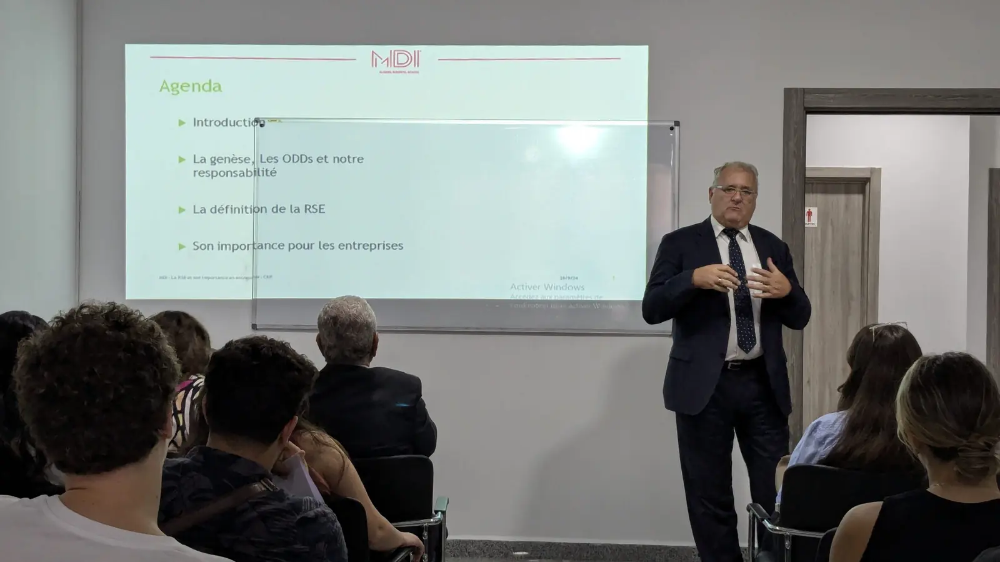
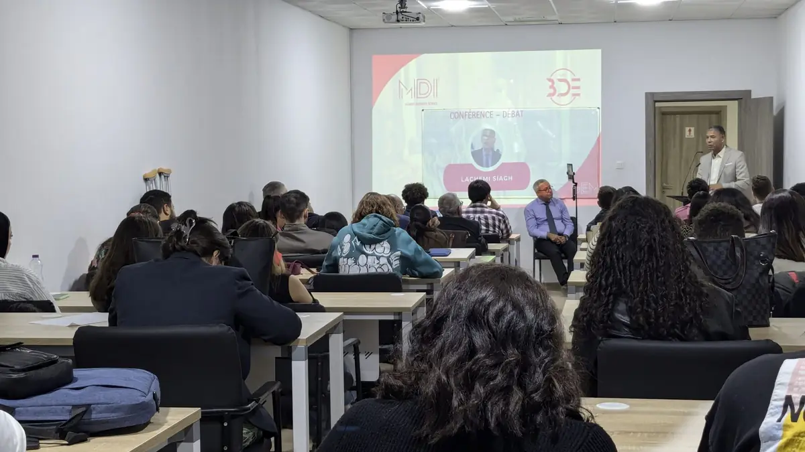
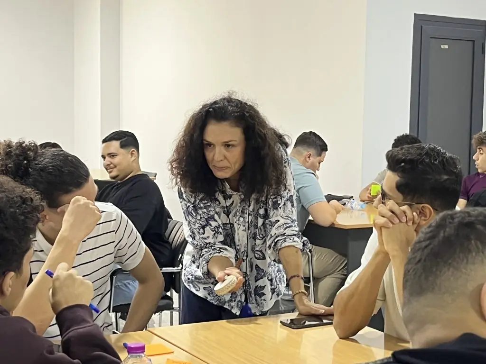

L’école · Corps professoral
Une faculté pluridisciplinaire.
Enseignants-chercheurs titulaires d’un doctorat, consultants et dirigeants d’entreprise experts de leur domaine : à MDI, chaque cours associe la rigueur académique et l’expérience du terrain.

Qui enseigne
Trois profils, une même exigence.
L’école décrit sa faculté comme pluridisciplinaire et cite « la qualité indéniable de notre corps professoral » parmi ses atouts. Les intervenants sont des enseignants-chercheurs, des consultants et des dirigeants d’entreprise, experts dans leur domaine.
01
Enseignants-chercheurs
Docteurs et professeurs : ils portent les enseignements fondamentaux, dirigent les mémoires et les soutenances, publient dans la revue ManagementS et nourrissent le colloque annuel de l’école.
La recherche02
Consultants et formateurs
Experts d’une fonction ou d’un outil (finance, supply chain, Power BI, gestion de projet) : ils apportent les cas réels et animent les formations inter-entreprises de MDI Executive Education.
Executive Education03
Dirigeants d’entreprise
Chefs d’entreprise et cadres dirigeants interviennent dans les programmes, siègent au conseil d’orientation et ouvrent leurs organisations aux stages et aux visites d’étudiants.
Intervenir à MDILes étudiants le disent eux-mêmes : « Les enseignants sont disponibles, à l’écoute et sincèrement investis dans notre réussite. Que ce soit pour les études, les stages ou l’orientation, l’équipe est toujours présente pour nous guider. »
Anis Hadadi, diplômé du Master Marketing Digital & E-Business, directeur marketing.

Domaines d’enseignement
Du management au Business English : quatorze domaines.
Les disciplines dans lesquelles l’école recrute et fait intervenir ses enseignants, telles qu’elles figurent dans le formulaire de candidature enseignant.
- Stratégie et management des organisations
- Management des ressources humaines
- Marketing
- Audit et contrôle de gestion
- Communication
- Comptabilité et finance
- Économie
- Mathématiques
- Achat et supply chain management
- Informatique et digital
- Droit
- Entrepreneuriat
- Sociologie des organisations
- Business English
Langues d’intervention
Les cours sont dispensés en français ; certains enseignements du Master Management Digital & Systèmes d’Information sont en anglais, et la capacité à enseigner en anglais fait partie des critères de recrutement.
Depuis 2025
Le département Informatique & Intelligence Artificielle, créé en 2025, porte les trois Licences informatiques ouvertes à la rentrée 2025 : Business Intelligence, Informatique & IA, Informatique & Sécurité digitale.
La création du départementExigences
Ce que l’école demande à ceux qui enseignent.
Les critères publiés dans les campagnes de recrutement de l’école, de 2023 à 2025.
Enseignant-chercheur : trois critères
- Doctorat obtenu
- Au moins trois ans d’expérience en enseignement et en recherche
- Capacité à enseigner en anglais
Critères publiés lors de la campagne de recrutement d’enseignants-chercheurs d’octobre 2023.
Candidater- Enseignants-chercheurs
Titulaires d’un doctorat, au moins trois ans d’expérience en enseignement et en recherche, capacité à enseigner en anglais. Campagne d’octobre 2023 : marketing, finance d’entreprise, comptabilité, contrôle de gestion, finance de marché, management international, RH, économie, droit des affaires.
- Rentrée 2024-2025
Campagne de juillet 2024 : profils marketing, management, logistique, finance et comptabilité, informatique et intelligence artificielle, droit des affaires, en amont de la création du département Informatique & IA.
- Consultants-formateurs
MDI Executive Education a lancé en février 2025 un appel à consultants-formateurs justifiant d’au moins cinq ans d’expérience en formation professionnelle, dans quatorze domaines, de la stratégie à Power BI et au management de projet PMI-PMP.
- Coordinateurs pédagogiques
Appel à candidatures de juillet 2025 (Bac+3 minimum, trois ans d’expérience, arabe, français et anglais) pour le suivi des programmes, des plannings, des examens et des soutenances.
Professeurs invités
Des voix internationales sur le campus.
Des professeurs et des conférenciers extérieurs interviennent régulièrement à MDI : rencontres-débats, ateliers de recherche du DBA, leçons inaugurales et conférences.
Professeur invité
Pr Taïeb Hafsi
Professeur émérite à HEC Montréal, figure internationale de la stratégie et de la gouvernance des organisations. Rencontre-débat du 11 décembre 2025 sur la pensée autonome comme levier du succès des entreprises.
La rencontre-débatProfesseur invité
Pr Pierre Louart
Anime les ateliers de recherche du DBA (Doctorate of Business Administration) et des workshops en ressources humaines ; atelier du 19 avril 2025 consacré à l’avancement des recherches des participants.
L’atelier DBAConférencier
Dr Samir B. Maliki
Intervenant des conférences organisées par l’école en 2024, dans le cadre des rencontres qui ouvrent les programmes aux débats du management contemporain.
La recherche à MDIConseil scientifique
Dix docteurs et professeurs valident les programmes.
Installé en mars 2021, le conseil scientifique valide les programmes, les règlements des études et les orientations de la recherche. Il réunit dix docteurs et professeurs, présidés par le Dr Brahim Benabdeslem.
Joindre le service académique
Pour une question sur un enseignant, une direction de mémoire ou une intervention en entreprise, écrivez au service académique.
academique.edu@mdi-alger.com (nouvel onglet)

Rejoindre la faculté
Enseigner à MDI.
Docteur en sciences de gestion, consultant expert d’une fonction ou dirigeant qui souhaite transmettre : l’école recrute des enseignants-chercheurs, des consultants-formateurs et des coordinateurs pédagogiques.